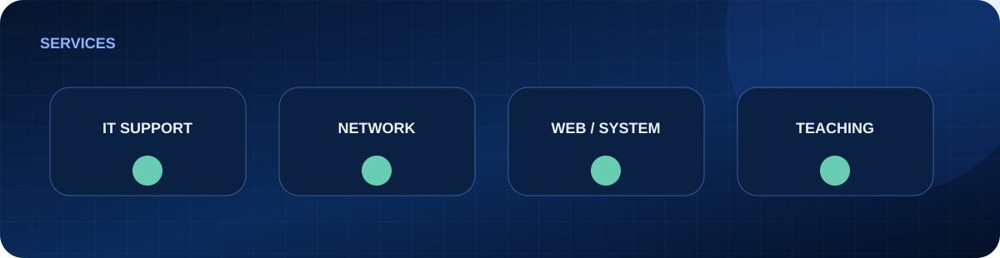
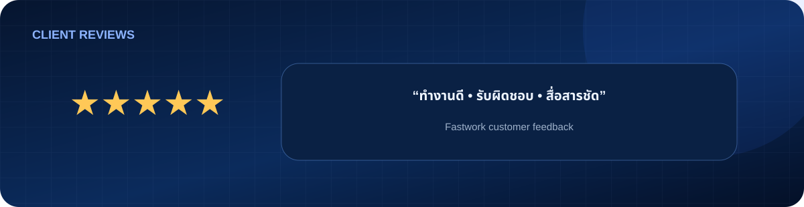

IT Procurement Intensive — Day 1
CPU, GPU, RAM, Storage, Notebook, Server, OS, Microsoft, License และการอ่าน Specification / Quotation สำหรับงานจัดซื้อ IT
หลังเรียน: Video + Slides + Private Files
เริ่มเรียน Day 1 →บริการ IT Support, Network, Web/System และคอร์ส Private แบบใช้งานจริง พร้อมวิดีโอ สไลด์ และไฟล์ฝึกย้อนหลังเฉพาะลูกค้าแต่ละคน
บริการที่รับงานเป็นประจำสำหรับลูกค้าบุคคล ธุรกิจ นักเรียน/นักศึกษา และผู้ที่ต้องการคำปรึกษาด้าน IT

วินิจฉัยและแก้ปัญหา Computer, Laptop และ Network ทุกรูปแบบ ทั้งฮาร์ดแวร์ ซอฟต์แวร์ และการเชื่อมต่อเครือข่าย ให้คำปรึกษาแบบตรงประเด็น เข้าใจง่าย
สอนคอมพิวเตอร์ IT Network และวิทยาการคำนวณ ทุกระดับตั้งแต่ผู้เริ่มต้นจนถึงระดับสูง ปรับเนื้อหาให้เหมาะกับผู้เรียนแต่ละคน เน้นลงมือทำจริง
รับทำเว็บด้วย WordPress และปรับแต่ง HTML / CSS / JavaScript รวมถึงพัฒนาเว็บระบบ (School / Business system) ด้วย Google Apps Script
หน้าสาธารณะแสดงเฉพาะรายละเอียดหลักสูตร เนื้อหาฉบับเต็ม วิดีโอ สไลด์ และไฟล์ฝึกเปิดเฉพาะผู้เรียน
CPU, GPU, RAM, Storage, Notebook, Server, OS, Microsoft, License และการอ่าน Specification / Quotation สำหรับงานจัดซื้อ IT
Network, Switch, Wi‑Fi, PoE, VLAN, VPN, Firewall, Security, Server, RAID, Backup, VM และ Cloud สำหรับงานจัดซื้อ IT Infrastructure
Spec Comparison, Datasheet, Compatibility, EOL/EOS, Equivalent / Alternative Product, TCO, Deviation, Recommendation และ Workshop การหารุ่นทดแทนจริง

หลักสูตรเต็มตั้งแต่ Computer Fundamentals, โปรแกรมที่ใช้จริง, Office & Data, Cloud, Search & Verify, AI, Computational Thinking, Digital Safety ไปจนถึงการเลือกเครื่องมือและสร้าง Project จากโจทย์จริงด้วยตัวเอง
จัดการไฟล์ โฟลเดอร์ ระบบปฏิบัติการ การใช้งานคอมพิวเตอร์ในชีวิตประจำวัน
ฝึกคิดแบบช่าง IT ตรวจ Windows, Network และแก้ปัญหาอย่างเป็นขั้นตอน
คัดเฉพาะงานที่อธิบายโจทย์ วิธีทำ และสิ่งที่ลูกค้าได้รับจริง โดยปกปิดข้อมูลส่วนบุคคล
ออกแบบหลักสูตรจาก Requirement งานจัดซื้อ แบ่ง Core 3 วัน และภาคเสริม Enterprise ตามความจำเป็น
จัดคู่มือ Hardware, Operating System, Windows 11, File Management และภารกิจฝึกตามพื้นฐานผู้เรียน
ปรับภารกิจตามความเร็วผู้เรียน พร้อม Playbook, HTML Games และไฟล์โปรเจกต์ที่นำไปพัฒนาต่อได้
ลูกค้าแต่ละคนได้รับพื้นที่ Private แยกตามคอร์สและแพ็กเกจ เพื่อกลับมาดูวิดีโอ อ่านสไลด์ และใช้ไฟล์ Workshop ของตนเอง
ย้อนดูขั้นตอนหรือบทที่ต้องการได้ โดยมีการบันทึกเมื่อผู้เรียนและผู้เข้าร่วมยินยอม
เอกสารที่ใช้สอนจริง พร้อมเนื้อหาอ่านต่อที่เหมาะกับพื้นฐานและเป้าหมายของลูกค้า
ไฟล์ฝึก Template หรือ Source Code ถูกแยกตามผู้เรียน ไม่ใช้ลิงก์รวมสาธารณะ
คะแนนเฉลี่ย 5.0 ดาว จาก 8 รีวิวบน Fastwork


ติดต่อได้หลายช่องทาง เลือกช่องทางที่สะดวก แล้วส่งรายละเอียดงานมาให้ประเมินได้เลย